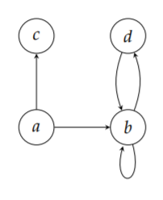

Welcome to dsc40graph’s documentation!¶
This module provides efficient data structures for representing undirected and directed graphs.
Installation¶
This module is on PyPI. To install it, simply run the command:
pip install dsc40graph
Alternatively, you may download dsc40graph.py from GitHub
and place it in the same directory as your code.
User Guide¶
This section of the documentation describes the most common use cases. The next section lists the objects provided by the module.
Creating graphs¶
This module contains two graph classes: UndirectedGraph and
DirectedGraph. They can be instantiated as follows:
>>> import dsc40graph
>>> graph = dsc40graph.UndirectedGraph()
>>> digraph = dsc40graph.DirectedGraph()
In what follows we will assume that the above lines have been executed so that we have two objects: graph and digraph representing an undirected graph and a directed graph, respectively.
Nodes can be created by supplying the new node’s label to the
UndirectedGraph.add_node() and DirectedGraph.add_node() methods.
Valid labels include numbers and strings:
>>> graph.add_node(1)
>>> graph.add_node('foo')
In fact, anything that can be a key in a Python dict (i.e., anything hashable) can be a node label. For instance, a tuple of numbers and strings is hashable and can be a node label:
>>> graph.add_node((1, 2, 'hello'))
Edges are added to the graph by supplying the labels of the edge’s nodes to the
UndirectedGraph.add_edge() and the DirectedGraph.add_edge()
methods:
>>> graph.add_edge(1, 2)
>>> digraph.add_edge(1, 2)
>>> digraph.add_edge(2, 1)
If an edge involves a node which is not in the graph, the node is automatically created:
>>> graph.add_edge(1, 42)
Nodes and edges can be removed with the
UndirectedGraph.remove_node,
UndirectedGraph.remove_edge,
DirectedGraph.remove_node, and
DirectedGraph.remove_edge methods.
Any of these methods will raise an exception if the node/edge being removed does not exist.
Example 1: Undirected Graph¶
Consider the following undirected graph.
The most basic approach to representing the graph above in code is what follows:
>>> graph = dsc40graph.UndirectedGraph()
>>> graph.add_node('a')
>>> graph.add_node('b')
>>> graph.add_node('c')
>>> graph.add_node('d')
>>> graph.add_edge('a', 'c')
>>> graph.add_edge('a', 'b')
>>> graph.add_edge('b', 'd')
Since nodes are automatically created when an edge is added, the same graph could have been constructed with the following code:
>>> graph = dsc40graph.UndirectedGraph()
>>> graph.add_edge('a', 'c')
>>> graph.add_edge('a', 'b')
>>> graph.add_edge('b', 'd')
An approach which is often more concise is to define a list of the edges and loop over them:
>>> graph = dsc40graph.UndirectedGraph()
>>> for u, v in [('a', 'c'), ('a', 'b'), ('b', 'd')]:
... graph.add_edge(u, v)
Example 2: Directed Graph¶
Consider the following digraph:
The most basic approach to creating this graph is as follows:
>>> digraph = dsc40graph.DirectedGraph()
>>> digraph.add_node('a')
>>> digraph.add_node('b')
>>> digraph.add_node('c')
>>> digraph.add_node('d')
>>> digraph.add_edge('a', 'c')
>>> digraph.add_edge('a', 'b')
>>> digraph.add_edge('b', 'b')
>>> digraph.add_edge('b', 'd')
>>> digraph.add_edge('d', 'b')
But because nodes are automatically created when edges are added, we could accomplish the same result with the following code:
>>> digraph = dsc40graph.DirectedGraph()
>>> for u, v in [('a', 'c'), ('a', 'b'), ('b', 'b'), ('b', 'd'), ('d', 'b')]:
... digraph.add_edge(u, v)
Working with Graphs¶
Suppose the variable graph represents the undirected graph shown below:
While the code in this section will deal with the undirected graph above, the same code will work for directed graphs.
Questions about the nodes in the graph can be answered by interacting with the graph.nodes
attribute. For instance, to get the number of nodes:
>>> len(graph.nodes)
4
To check if a node with a certain label exists:
>>> 'a' in graph.nodes
True
>>> 'foo' in graph.nodes
False
Similarly, questions about the edges of a graph are answered using the graph.edges attribute.
For example, the number of edges is found by writing:
>>> len(graph.edges)
3
To query for the existence of an edge:
>>> ('a', 'b') in graph.edges
True
>>> ('b', 'a') in graph.edges
True
>>> ('a', 'foo') in graph.edges
False
The UndirectedGraph.neighbors() method returns the neighbors of a node:
>>> graph.neighbors('a')
{'c', 'b'}
Do not modify this set! It is a view of the internal representation of the graph.
In addition to having a .neighbors() method, directed graphs have
DirectedGraph.predecessors() and DirectedGraph.successors()
methods. The DirectedGraph.neighbors() method is an alias of
DirectedGraph.successors().
API¶
Classes¶
-
class
UndirectedGraph(_edge_view_factory=<class 'dsc40graph._UndirectedEdgeView'>)¶ -
nodes¶ A view of the graph’s nodes. The number of nodes can be found by writing:
>>> len(graph.nodes)
A query for the node with label ‘u’ can be performed by writing:
>>> 'u' in graph.nodes
-
edges¶ A view of the graph’s edges. The number of edges can be retrieved by writing:
>>> len(graph.edges)
A query for the edge with labels ‘u’ and ‘v’ can be performed by writing:
>>> ('u', 'v') in graph.edges
Since edges have no orientation in an undirected graph, the order of the nodes in the query does not matter. That is, the above is equivalent to:
>>> ('v', 'u') in graph.edges
-
add_node(label)¶ Add a node with the given label.
If the node already exists, nothing is done.
Average case time complexity: Theta(1).
- Parameters
label – The label of the node.
-
remove_node(label)¶ Remove a node grom the graph.
Average case time complexity: Theta(# of neighbors)
- Parameters
label – The label of the node to be removed.
- Raises
DoesNotExistError – If the node is not in the graph.
-
add_edge(u_label, v_label)¶ Add an undirected edge to the graph.
If the edge already exists, nothing is done.
Average case time complexity: Theta(1).
- Parameters
u_label – Label of one of the nodes in the edge.
v_label – Label of the other node in the edge.
Notes
If either of the nodes is not in the graph, the node is created.
- Raises
ValueError – If an attempt to add a self-loop is made. Undirected graphs do not have self-loops.
-
remove_edge(u_label, v_label)¶ Remove the edge from the graph.
Average case time complexity: Theta(1)
- Parameters
u_label – The label of one of the nodes in the edge.
v_label – The label of the other node.
- Raises
DoesNotExistError – If the edge is not in the graph.
-
neighbors(label)¶ The neighbors of the node.
- Parameters
label – The label of the node whose neighbors should be retrieved.
- Returns
The neighbors as a Python set. This set should not be modified.
- Return type
set
Note
Since the return value is a set, there is no guarantee about the orders of the neighbors.
-
-
class
DirectedGraph(_edge_view_factory=<class 'dsc40graph._DirectedEdgeView'>)¶ -
nodes¶ A view of the graph’s nodes. The number of nodes can be found by writing:
>>> len(graph.nodes)
A query for the node with label ‘u’ can be performed by writing:
>>> 'u' in graph.nodes
-
edges¶ A view of the graph’s edges. The number of edges can be retrieved by writing:
>>> len(graph.edges)
A query for the edge with labels ‘u’ and ‘v’ can be performed by writing:
>>> ('u', 'v') in graph.edges
-
add_node(label)¶ Add a node with the given label.
If the node already exists, nothing is done.
Average case time complexity: Theta(1).
- Parameters
label – The label of the node.
-
remove_node(label)¶ Remove a node grom the graph.
Average case time complexity: Theta(# of predecessors)
- Parameters
label – The label of the node to be removed.
- Raises
DoesNotExistError – If the node is not in the graph.
-
add_edge(u_label, v_label)¶ Add a directed edge to the graph.
If the edge already exists, nothing is done.
Average case time complexity: Theta(1).
- Parameters
u_label – Label of the parent node.
v_label – Label of the child node.
Note
If either of the nodes is not in the graph, the node is created.
-
remove_edge(u_label, v_label)¶ Remove the edge from the graph.
Average case time complexity: Theta(1)
- Parameters
u_label – The label of one of the nodes in the edge.
v_label – The label of the other node.
- Raises
DoesNotExistError – If the edge is not in the graph.
-
predecessors(label)¶ The predecessors of the node.
- Parameters
label – The label of the node whose predecessors should be retrieved.
- Returns
The predecessors as a Python set. This set should not be modified.
- Return type
set
Note
Since the return value is a set, there is no guarantee about the orders of the neighbors.
-
successors(label)¶ The successors of the node.
- Parameters
label – The label of the node whose successors should be retrieved.
- Returns
The successors as a Python set. This set should not be modified.
- Return type
set
Note
Since the return value is a set, there is no guarantee about the orders of the neighbors.
-
neighbors(label)¶ Alias of successors. Provided for convenience.
-